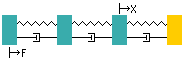
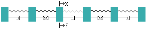
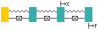
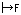
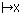
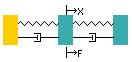
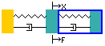
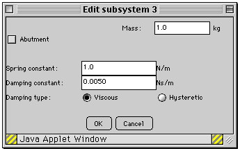

Instructions
This package allows you to investigate the forced vibration response of an axial multi-degree of freedom system. Some typical systems are shown below,
|

|

|
|

|
|
These four systems show the range of variables that may be used. They have certain common features,
|
This indicates a rigid abutment. These are fixed to earth and may be at either end of the system. |
 |
This indicates a rigid mass and you will be able to change the size of the mass in kg. |
|
This indicates a massless spring and you will be able to change its stiffness in N/m. |
|
This indicates a viscous damper and you will be able to change its coefficient in Ns/m. |
|
This indicates a hysteretic damper and you will be able to change its coefficient in N/m. |
 |
This indicates the excitation force position and you will be able to change its position. |
 |
This indicates the measured displacement position and you will be able to change its position. |
When the applet is loaded the system that is shown looks like,
 |
The response curve for this system is shown as a graph. As a first experiment use the mouse to move the X and F positions to see how the response changes.
The animation shown under the response is for the frequency shown by the blue line. This frequency can be changed by dragging the line.
|
Adding and removing masses.
 |
Use the mouse to select a spring/mass/damper. The delete button can be used to remove it. If the add button is used another spring/mass/damper is added to the right. The response changes immediately the deletion or addition is made. If X or F is on the mass deleted then they move to the mass on the left.
|
Changing parameter values.
 |
When a spring/mass/damper is selected the edit button will allow parameter values to be changed using a dialogue box.
he damping may be changed to hysteretic.
Also if the mass is at an extreme end of the system it may be changed to a "fixed" abutment.
Note that when a new system is added, default values as used for all parameters.
Your choice of parameter values will be restricted depending on what level you have been assigned.
|
Changing mass to abutment and back.